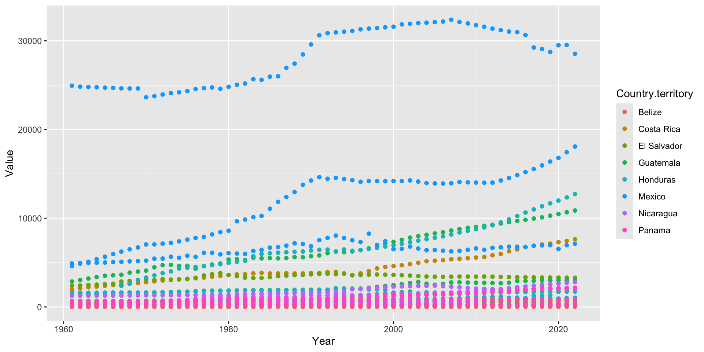
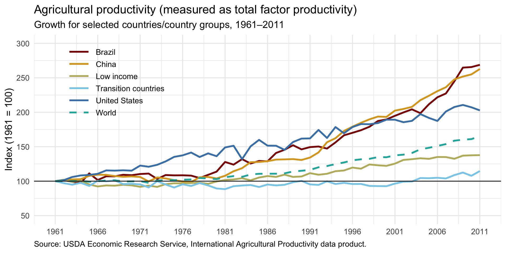

Lecture 2
Installing R:
Start by Installing R:
Please attempt this prior to the start of lecture. If you successfully install R and RStudio without any issues, feel free to arrive at 9:15am on Thursday to allow us time to help other students
To install R, you should install both R and RStudio. To download and install R, you should click the following:
Once you get to this website, click the “Download R for macOS” or “Download R for Windows” depending on your machine.
To get the R Studio interface, you can click on the same link as above and then click “Download RStudio Desktop.”
If you would like step by step instructions, you can do so here.
Please tell the teaching team if you need assistance!
Recap:
Who can tell me what the essential functions do?
filter()
arrange()
select()
mutate()
summarise()
group_by()
I highly recommend reading Hadley Wickham’s chapter that has descriptions and examples of key functions.
- You can do 80% of data exploration and analysis using these.
- Often, data analysis is knowing what the right question to ask is. Summary statistics are very powerful.
Here is a cheatsheet I highly recommend.
Goals for today:
- Reinforce principles of data cleaning and dplyr
- Learn about tidy data
- Build plots and understand key points of data visualization
- Replicate a data visualization produced in real reports
Tidy data:
A dataset is tidy if it satisfies the following conditions:
each variable forms a column
each observation forms a row
each cell is a single measurement
long format

Untidy data:

L. Bartram, M. Correll and M. Tory, “Untidy Data: The Unreasonable Effectiveness of Tables” in IEEE Transactions on Visualization & Computer Graphics, vol. 28, no. 01, pp. 686-696, Jan. 2022, doi: 10.1109/TVCG.2021.3114830
Effective visualization is important!
Let’s look at some examples of unique data visualizations here.
Data is only as useful as it is understood.
- Poor visualization can mislead or confuse: a good plot tells a story, a bad plot hides the truth.
Principles of Effective Data Visualization:
Clear: not too busy, appropriate labels
Accurate: don’t truncate axes, don’t mislead color gradients
Efficient: convey info quickly and remove non-essential components
Consistent: line chart for trends, bar charts for comparison
Accessibility: make sure easy to interpret
Lots of ways to plot in R:
There are many different ways to plot in R
- You have already seen plots in Base R
There are also lots of many different graphs you can make
- For a directory, you could see The R Graph Gallery
We will focus on ggplot2:
How to structure a ggplot:
 The first 3 are essential, the rest are very helpful!
The first 3 are essential, the rest are very helpful!
Imagine that you were describing a graph to someone. How would you do it?
Data to be visualized
Geometric objects that appear on the plot
Aesthetic mappings from data to visual components
Statistics transform data on the way to visualization
Coordinates organize location of geometric objects
Scales define the range of values for aesthetics
Facets group into subplots
ggplot
For today and most of your time, you will just need the ggplot2 package from the tidyverse mega-package.
Consistent with Grammar of Graphics
Flexible
Layering and theme customization
Community
General Formula:
- Data: the data you want to visualize
- Layers: geom_ and stat_ : the geometric shapes and statistical summaries representing the data
- Aesthetics:
aes(): aesthetic mappings of the geometric and statistical objects - Scales: scale_: map between the aesthetic dimensions
- Coordinate system: coord_: maps data into the plane of data rectangle
- Facets: facet_ arrangement of the data into a grid of plots
- Visual themes:
theme()andtheme_: the overall visual defaults of a plot
Start with data:
Load in data and install packages.
Let’s look at data on International Agricultural Productivity.
library(tidyverse)
# load in the data:
tfp <- read.csv('https://ers.usda.gov/sites/default/files/_laserfiche/DataFiles/51270/AgTFPInternational2022_long.csv?v=1647')
# explore the data:
head(tfp) Order FAO ISO3 Country.territory Region Sub.Region Inc.I Year Attribute
1 1 159 NGA Nigeria SSA SSA, Nigeria MI-L 1961 TFP_Index
2 1 159 NGA Nigeria SSA SSA, Nigeria MI-L 1961 Outall_Index
3 1 159 NGA Nigeria SSA SSA, Nigeria MI-L 1961 Input_Index
4 1 159 NGA Nigeria SSA SSA, Nigeria MI-L 1961 Land_Index
5 1 159 NGA Nigeria SSA SSA, Nigeria MI-L 1961 Labor_Index
6 1 159 NGA Nigeria SSA SSA, Nigeria MI-L 1961 Capital_Index
Value
1 88.4780
2 19.2773
3 21.7877
4 40.3669
5 51.4274
6 8.6992 Order FAO ISO3 Country.territory Region Sub.Region
259803 242 NA G20 (19 countries 2021)
259804 242 NA G20 (19 countries 2021)
259805 242 NA G20 (19 countries 2021)
259806 242 NA G20 (19 countries 2021)
259807 242 NA G20 (19 countries 2021)
259808 242 NA G20 (19 countries 2021)
Inc.I Year Attribute Value
259803 2022 Capital_Q 4689431.5
259804 2022 Fertilizer_Q 163841571.5
259805 2022 Feed_Q 3482819729.3
259806 2022 Cropland_Q 868541.5
259807 2022 Pasture_Q 1645427.0
259808 2022 IrrigArea_Q 225722.2Creating the data
Let’s say that we want to plot total output over time across the globe. We look at the code book and find that the Output Total Variable is the gross Value of agricultural output from crops, livestock and aquaculture, $1000 at constant 2015 prices.
# get just total output:
output <- tfp %>% filter(Attribute == "Outall_Q")
# look and see what regions we have:
table(output$Region)
ASIA
2108
ASIA, Total
62
ASIA, Total LDC
62
China
62
CWANA
1951
CWANA, Total
62
Developing Countries
62
EU14 (includes E&W Germany, excludes UK)
62
EU27 (27 countries as of 2021 excludes UK)
62
EUROPE
2651
EUROPE, Total
62
Former Soviet Union
62
G20 (19 countries 2021)
62
High income
62
Industrialized Countries
62
LAC
2108
LAC, Total
62
Low income
62
Lower-middle income
62
NORTH AMERICA
186
OCEANIA
186
OECD (38 countries as of 2021)
62
SSA
3432
SSA, Total
62
Transition countries
62
Upper-middle income
62
Upper-middle income, excluding China
62
World
62 Creating the data:
This is why inspecting your data is important–we have separate observations for different countries, as well as subtotals by region. If we just summarized, then we would over count! Let’s restrict to just the world:
world_output <- output %>%
# restrict just to the world
filter(Region == "World") %>%
# convert to billions (we are currently in thousands)
mutate(value_billions = Value/1000000) %>%
# select just the variables that we need:
select(Year, value_billions)
# preview the data:
head(world_output) Year value_billions
1 1961 1081.469
2 1962 1116.667
3 1963 1145.179
4 1964 1184.011
5 1965 1209.248
6 1966 1253.067Starting the plot:
Let’s start making the plot:

Making the plot:
Let’s map the data to the plot:
Mapping is a set of instructions on how the data are mapped onto aesthetic attributes of geometric objects. It translates tidy data to the graphics system.
A mapping can be made by using the
aes()function to make pairs of graphical attributes and parts of the data.
Most commonly used geoms:
geom_bar()andgeom_col(): bar chartsgeom_boxplot(): box and whisker plotsgeom_density(): density estimatesgeom_jitter(): jitter pointsgeom_line(): line plotsgeom_point(): scatter plots
To know more about layers, look at this.
Add Layers:
This is the essential part of making the data appear on the chart:
Add Layers:
You can add multiple layers to the same chart
Adding Theme:
We will talk about scales, facets, and coordinates later, once we have more data we want to show, but let’s focus on theme next:
Add labels:
# start by just specifying the data
ggplot(data = world_output, aes(x=Year, y = value_billions)) +
geom_point() + # add points
geom_line() + # add a line
theme_classic() + # add a theme
labs(
x = "Year",
y = "Amount (Billions USD, 2015 terms)",
title = "Global TFP Output Over Time",
caption = "Source: "
) # add labelsAnother graph:
Let’s try to make a graph the countries of Central America, and keep all of the attributes:
# get a dataset of Cetnral America
central_america <- tfp |>
# restrict to central america:
filter(Sub.Region == "Central America") |>
# get rid of the subtotal:
filter(Country.territory != "Central America") |>
# select the attributes we want:
filter(Attribute %in% c("Land_Q", "Labor_Q", "Capital_Q")) |>
# select the variables we need:
select(Country.territory, Year, Value, Attribute)
# preview the data:
head(central_america) Country.territory Year Value Attribute
1 Belize 1961 43.1018 Land_Q
2 Belize 1961 9.0096 Labor_Q
3 Belize 1961 24.8566 Capital_Q
4 Belize 1962 43.1018 Land_Q
5 Belize 1962 9.7604 Labor_Q
6 Belize 1962 28.3185 Capital_QBuild the graph:
What’s wrong with this?
Color coding by country:
Is this better?
Scaling the axis:
Is this better?
Separate graph by country:
Changing our color and adding labels:
ggplot(data=central_america, aes(x=Year, y = Value, color = Attribute)) +
scale_y_log10() +
facet_wrap(~ Country.territory, scales = "free") +
geom_point() +
labs(y = "Amount (log Thousands USD)", title = "Input Components",
color = "Input Factor") +
scale_color_manual(labels = c("Capital", "Labor", "Land"),
values = c("red", "darkgreen", "blue"))Changing our color and adding labels:
ggplot(data=central_america, aes(x=Year, y = Value, color = Country.territory)) +
scale_y_log10() +
facet_wrap(~ Attribute,
labeller = as_labeller(c(
"Capital_Q" = "Capital",
"Labor_Q" = "Labor",
"Land_Q" = "Land"
))) +
geom_point() +
labs(y = "Amount (log Thousands USD)", title = "Input Components", color = "Country", caption = "Source: USDA ERS") We are going to make this graph:
.png)
Take a few minutes and talk to your neighbor about the steps.
Steps:
- Select/filter what we need from the dataset
- Hint: we may need to use a combo of region and countries to filter on
- Recalculate Index
- We are based in 2015 with this data, we want to convert to 1961 base
- Create a base line plot in ggplot
- Adjust the theme parameters to make it look similar
Work with the group next to you to make this graph, we will check in after a few steps
My rendition:
Recap:
What did we learn today?
dplyr basics:
filter()→ subset rows
arrange()→ order rows
select()→ choose columns
mutate()→ create/transform variables
summarise()+group_by()→ summary statistics by group
Tidy data: each variable = column, each observation = row, each value = one cell
Data visualization with ggplot2:
- Grammar of Graphics framework (data → aesthetics → geoms → scales → facets → theme)
- Start simple, then layer
- Themes, labels, and scales make plots more effective
- Grammar of Graphics framework (data → aesthetics → geoms → scales → facets → theme)
Principles of good visualization:
- Clear, accurate, efficient, consistent, accessible
✨ Key takeaway: 80% of your data exploration can be done with these dplyr verbs and ggplot2 basics!